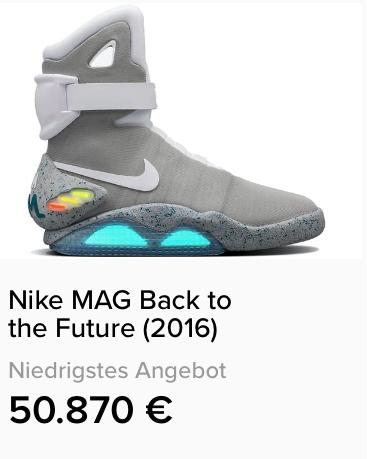
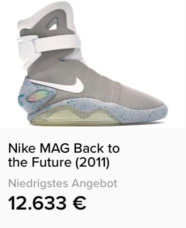

"Nike MAG" ist ein Modell von Snkrs der Milliarden Firma Nike. Sie sind ein Replikat der Schuhe der Filmfigur Marty McFly aus dem Film "Zurück in die Zukunft II". Die Schuhe sind mit LEDs beleuchtet und haben einen automatisierten Verschluss. Sie wurden von Nike-Designer “Tinker Hatfield" für den Film im Jahr 1989 erfunden. Das damalige Modell war nicht marktreif und funktionierte nur als Requisite weswegen über 15 Jahre später Fans der Filmreihe eine Petition starteten, die McFly-Schuhe auf den Markt zu bringen.
  Die erste Auflage erschien mit 1510 Exemplaren von Nike Mag in einer sehr stark limitierten Auflage wie noch nie zuvor. Sie entstanden in Zusammenarbeit mit der Schuhdesignerin Tiffany Beers. Die eingebauten, wiederaufladbaren Batterien können bis zu 3000 Stunden die Leuchtflächen des Schuhs mit Strom versorgen. Die automatisierte Verschlussfunktion war hier noch nicht realisiert. Käufer zahlten bis zu 9959 US-Dollar für ein Paar Nike MAG. Zu den Besitzern der Sonderedition gehören Prominente wie der Sänger Kanye West oder der US-Baseball-Spieler Brian Wilson. Es kamen Erlöse in Höhe von zusammen knapp 6 Millionen US-Dollar zusammen. Google mitgründer Sergey Brin und seine Frau Anne Wojcicki verdoppelten den Betrag der Onlineauktion auf 9,4 Millionen US-Dollar. Alle Erlöse kamen der Michael J. Fox Foundation zugute.

Am 4. Oktober 2016 wurde offiziell das Modell "Nike Mag" mit der Selbstbindefunktion in einer limitierten Stückzahl von 89 Stück vorgestellt. Ein Großteil der "Nike Mag” wurden über ein Gewinnspiel verlost, drei Paare in Auktionen versteigert. Auch hier wurden kamen die Erlöse der Michael J. Fox Foundation zugute.